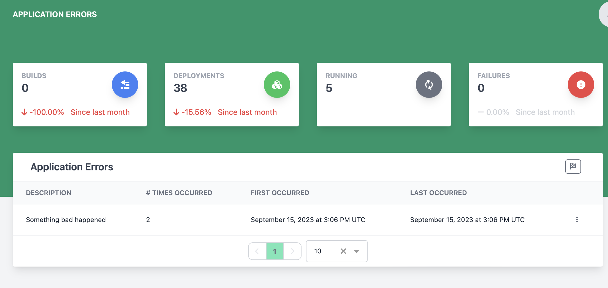

Viewing and Managing Application Errors
The application errors page lets a champagne admin user view and resolve a list of application errors that have occurred in champagne.

Resolve a single error
To resolve a single error, find the row with the error to resolve and click the 3 vertical dots to open the action menu and select Resolve.
Resolve all unresolved errors
To resolve all existing errors that are unresolved, click the button at the top right of the Application Errors card.
Viewing error details
To view more details about a specific error, then find the row with the error and click the 3 vertical dots to open the action menu and select View Details. This will open a dialog with more information including error causes and stack traces.